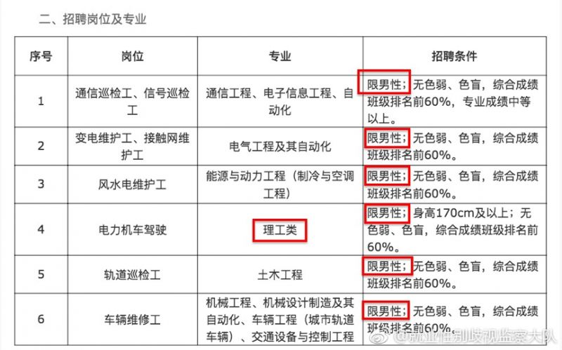

在铁路上是没有女司机的，当第一名地铁女司机登上地铁单独驾驶时，也是历史性一刻的诞生，女性从此多了一个可以工作的岗位，她们不输于任何一个男性，甚至还超过了许多男性。我们会记住，中国有一种司机叫地铁女司机。这是全国交通运输轨道交通技能大赛微信公众号某篇推送里的一段话，但是现实并没有文章中描述的那么美好。用关键词“地铁”检索@就业性别歧视监察大队的微博，可以看到28条结果，其中19条与招录性别歧视有关。
一、警务辅助人员
南昌地铁2号线招聘警务辅助人员170名，报名要求：男，18周岁以上、35周岁以下；江西省户口，具有大专以上学历，退伍军人具高中或以上学历，退伍军人、警院毕业生在同等条件下优先聘用。
武汉市公安局（轨道分局）公开招聘警务辅助人员165名（其中，男155名，女10名），年龄在18周岁以上、40周岁以下，其中女性年龄应在35周岁以下。男性身高不低于1.68米，女性身高不低于1.58米。
南京市公安局地铁分局公开招聘警务辅助人员，要求：男性，年龄18-35岁之间，高中及以上学历，身高170cm以上，退役战士优先。
深圳地铁2号线新秀—侨香招聘（男、女）保安员，男身高1.7米以上，年龄18-40周岁；女身高1.6以上，年龄18-30周岁。初中以上文化程度，无残疾，无口吃，无纹身，无违法犯罪或者其他恶习。
图1:某市公安局地铁公安分局大楼揭牌活动现场
辅警类司空见惯的招聘广告或要求仅限男性，或严格限制女性录取人数，或人为缩短女性的工作年限。根据《劳动法》第13条规定，妇女享有与男子平等的就业权利。除国家规定的不适合妇女的工种或者岗位外，用人单位不得以性别为由拒绝录用或者提高录用标准，以上行为均构成对女性的就业歧视。
二、地铁公司员工
杭州地铁公司招聘列车驾驶，负责地铁列车的驾驶，包括库内调车和调试等工作，为线路运营提供驾驶服务，确保客运列车的安全有序运行。任职要求为男性。
图2:杭州市地铁列车驾驶员招聘广告
南京工程学院就业信息网转载了南京地铁运营有限责任公司2018届校园招聘简章，通信巡检工、信号巡检工，变电维护工、接触网维护工，风水电维护工，电力机车驾驶，轨道巡检工，车辆维修工6岗位均“限男性”。经大队举报，目前该学校就业网链接显示“数据不存在或已过期”。

图3: 南京地铁运营有限责任公司2018届校园招聘简章（节选）
长沙地铁2018届全日制毕业生招聘提供600个工作岗位，其中540个岗位性别要求“男”。除站务员外，其它岗位均与女性无缘。唯一一个接纳女性的岗位是站务员（女），需求人数为60人，同岗位站务员（男）的需求人数为165人。除了要求男性身高不低于170cm,女性身高不低于160cm外，其他任职要求和岗位职责均一致。
一些公司的招聘活动，总会有那么几个岗位存在性别歧视。地铁公司却反其道而行之，以性别歧视为常态，以不歧视为例外。以地铁列车司机岗为例，我国不是没有女性地铁列车司机的先例。目前武汉地铁仍有女性职工在岗，并曾被评为2015年湖北省交通运输行业“十行百佳”标兵。虽然取得了一定的成绩，但是在这个男女比例大于100:1的岗位中，有多少人是被迫放弃。
三、地铁委培生
宁波市轨道交通集团有限公司运营分公司（甲方）与武汉铁路司机学校（乙方）2015年签订的订单培养协议书中关于“订单培养”的定义为，“由乙方按照甲方要求招聘学生，和学生签订定向到甲方就业协议而组成的班级，并由乙方根据甲方提出的培养目标，有针对性的完成订单班的在校培训，并在培养期满后，原则上由甲方按照不低于90%的比例录用合格为甲方员工的过程。“当年乘务专业（电客车司机）仅限男性，车辆检修男女比例10:1，今年6月正是Ta们毕业走向工作岗位的时候。
图4: 宁波市轨道交通集团有限公司运营分公司委托合同（节选）
青岛地铁在地铁晨报上刊登了自己委培生招考职位表的需求，招生要求理科为主、适量优秀文科生。招生数量男性737人，女性158人。委培学校有山东职业学院、山东交通学院、济南铁路高级技工学校、青岛市技师学院、青岛四方机车车辆技师学院和重庆铁路运输技师学院。除站务运作专业招录女性人数较多外，其余专业均存在严重性别歧视，车辆驾驶等8个专业根本没有设置女性名额。
四、冰山一角
在大队收到的投稿中，存在性别歧视的地铁公司有：宁波市轨道交通集团有限公司、南昌市轨道交通集团有限公司、深圳市轨道交通集团有限公司、南京市轨道交通集团有限公司、长沙市轨道交通集团有限公司、广州市轨道交通集团有限公司、杭州市轨道交通集团有限公司、武汉市轨道交通集团有限公司、青岛市轨道交通集团有限公司9家，当然还有更多未被投稿的地铁公司。
截至2018年7月，我国大陆有31个城市开通了地铁，地铁和轻轨总计4200公里。据中国搜索介绍，目前我国已有43个城市的轨道交通建设规划获得发改委批复，未来地铁工作和辅助人员的缺口很大，性别歧视也许将更加严重。
图5：存在招录性别歧视的地铁公司所在地
地铁是一个有意思的空间，在这里性骚扰与打狼行动共存、女性专属车厢与男性不雅坐姿相映成趣，在这个不大的场域里发生着形形色色的事情。我们中的一些人每天都会经过地铁站，但是很少会有人注意到地铁公司的性别歧视如此严重。希望地铁公司们正视并纠正招录中性别歧视的违法行为，并就“两不一保障”作出公开承诺：
不与院校签订具有性别歧视的订单培养协议；
招聘启事中不设置任何性别歧视的限制条件；
保障女职工同工同酬和公平晋升的合法权益。